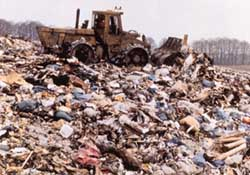
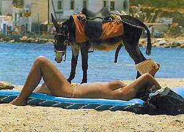
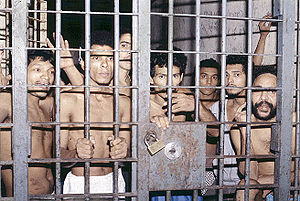
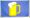

Valencia (Venezuela)
 De: La Frikipedia, la enciclopedia extremadamente seria.
De: La Frikipedia, la enciclopedia extremadamente seria.
| De la serie ciudades del mundo:
|
| Valencia
|
|
|
|
| (Bandera)
|
(Escudo de armas)
|
|
| Topónimo oficial
|
Nueva Valencia de José Manuel Rey
|
| País
|
 Venezuela Venezuela
|
| Código postal
|
5782 chavito
|
| Superficie
|
1400 Km rectangulares al rombo
|
| Altitud
|
470 milimetros de altura
|
| Distancia
|
De la redoma de guaparo hasta abajo bien abajo hasta que te quiten el carro.
|
| Fundación
|
1555 DC (despues de Chacumbele)
|
| Población
|
100.000 chavestias, 100.001 Antichavestias, 800.000Chinos y 800.001 Portugueses
|
| Gentilicio
|
Valenciano
|
| Alcalde
|
Como nunca hacen nada y parece que no existan se considera que no hay alcalde o ley alguna
|
| No confundir con Valencia, España
|
Para otras Valencias, véase Valencia (desambiguación).
Valencia es una ciudad de Venezuela, considerada como una de las ciudades más modernas del país, después de Caracas, Maracaibo, el resto del norte y todo el centro y sur del país.
Zonas
- Norte: Es lo que diferencia a esa ciudad de lo pobre y sucio de lo rico y requete sucio, donde todo el mundo cree que es lo mejor vivir ahi, con una fauna numerosa con muchos ejemplares de paviperros, emos, clase obrera (residenciados en el sur), y sobre todo muchas gasolineras o lobas. Para aparearte solo necesitas una lata (coche), pasta (dinero), código (tajeta de credito) y bulla en la lata (sonido en el coche con mucho vallenato y reggaeton) para optar por una gasolinera y llevarla a un matadero (motel), ya que la policia ha capturado numeras personas en carros haciendo actos de amor.
 Se puede observar la urbanización Trigal Norte, un lugar muy natural con un aire fresco en las mañanas
- Sul (sur): Esta zona esta diferenciada de la norte ya que es mucho mas hostil: muchos malandros, muchos tukkys y muchos chavestidos. Abarca desde la Cedeño hacia abajo, hasta que te dejen sin carro. Es mas peligro que Irak, matan más personas que soldados en plena guerra. Para poder visitar esa zona necesitas un hummer con blindaje nivel 9 y medio. Y antes de bajarte del carro guarda la antena.
- Media: Pues la zona media o clase media no existe ya que Chacumbele acabó con todo ese poblado, algunos emigraron a Yakilandia o al continente del primer mundo.
Turismo o faranduleo
Entre las atracciones turísticas podemos encontrar El reda, Las 4 Avenidas, El arbolito por el intercontinental (solo en diciembre), Dique, cerca de la clinica IEQ, calle de los cafes, calle del hambre de mañongo. Cualquier calle vacía y pagable donde cualquier malandro pueda robarte tu carro y dejarte a pata.
CC Via Veneto, aunque no forma parte de Valencia, es como si fuera parte ya que queda tan lejos como a 5 min a 100 km por hora, donde toda la chusma y la crema de valencia se van para alla ya que los sitios nocturnos de valencia cierran a las 3 am gracias al gobernador encambio via venneto es naguanagua y cierra a las 5am y para salir se te hacen las 6am asi que llevate una revista porno y papel higienico para evitar la cojonera.
Economia
La economia de Valencia es muy diversa, hay mucha fuente de trabajo tales como:
- Buhonero: puedes alquilar tu puestico en el mercado de los guajiros para que vendas ropa pero solo si tienes cabello liso y ojos achinados.
- Limosnero: puedes viajar gratis por toda la ciudad mediante autobuses, decir que saliste de tocuyito (una carcel limpia y decente) y la gente te dara dinero =). Es el trabajo mas facil sin embargo con la llegada del METRO de valencia, se acabara esta profesión.
- Se lo cuido: este trabajo es el mejor del mundo, tienes que mirar cómo la gente llega y cómo se va en su carro, solo le colocas un cartón o un papel que diga "CARRO VIGILADO" y cuando la gente se va te darán dinero.
- Punketo: Si eres punketo o emo (tratando de ser punketo) o come gato y sabes malabarear o colocarte gasolina en la boca (o en el culo) y escupir fuego, lo haces en cualquier semáforo de la zona norte y ellos te daran dinero (aparentemente la gente del norte es muy adinerada).
Sociedad
 Las mujeres valencianas son muy decentes y con alto contenido de moralidad
Los valencianos son externamente refinados pero por dentro poseen una alma tukky, les encanta el vallenato. Necesitan un excusa lo suficientemente vulgar y sin sentido alguno para celebrar en la calle, como por ejemplo:
- Cuando gane el mundia Bali
- Cuando gane un oro San Marino
- Cuando gane las eleccion Diosdado Cabello
- Cuando Michael Jackson declare que es culpable
- Cuando Colombia gane un mundial
- Cuando lean esto
- Cuando
los Leones del Caracas el Magallanes gane otra Serie del Caribe.
Universidades
Valencia posee numerosas universidades de alto nivel educativo, donde podrás descubrir tu vocación. Una de las más prestigiosas es la Universidad de Carabobo, con un sinfín de carreras: violador, terrorista, ladrón, malabarista, jugador de póker, tukky, transformista, actor de cine y drogadicto, entre otros.
 Salón de clase, 6to Semestre de Ginecología en la UC
Estados Hermanos
-  EUROBAR
- Calle del hambre
- Stadium de los Magallanes
- 4 Avenidas
Véase También
Autor(es):
- Roms
- Rundas
- AlemanH
- Anticristo2007
- Andre
- Periklex
- Ief
- Genericool
- Shadowmura
- Generibot
Frikipedia 2005-2016, Licencia
GFDL 1.2 - Extraído por FrikiLeaks